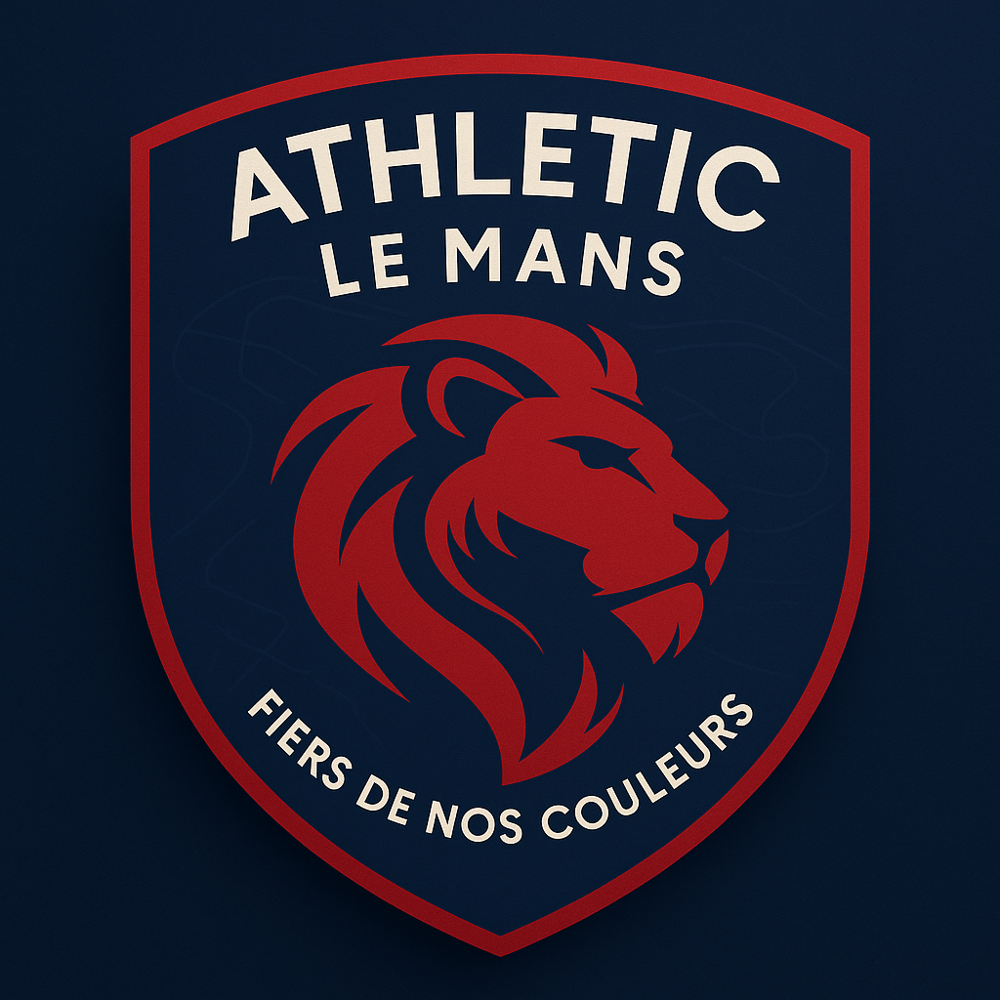

Acceuil de: l'Athlétic Le Mans

ALMFC : L'Athlétic Le Mans Football Club est un club ayant été fondé en 1970 après la fusion de L'Athlétic Le Mans et de Le Mans Football Club. Plusieurs trophés majeur ainsi que de grandes stars du ballon rond ayant porté ce maillot ont fait passer le club dans une toute nouvelle dimension...
En savoir plusNotre ADN
Depuis 1970, l'Athlétic Le Mans FC incarne la passion du football en France. Nos couleurs rouge et bleu symbolisent la détermination et l'ambition qui animent chaque match au stade.
🔴🔵 Nos couleurs, notre fierté
Depuis sa création, Athletic Le Mans porte fièrement les couleurs rouge et bleu, véritables piliers de son identité.
🔴 Le rouge incarne la passion, le courage et la détermination. C’est la couleur du cœur, celle qui bat pour chaque match, chaque but, chaque moment de fierté.
🔵 Le bleu symbolise la maîtrise, la solidité et l’ambition. Il reflète notre vision du jeu : exigeante, posée et tournée vers l’excellence. Ces deux couleurs se rencontrent pour créer un équilibre fort entre l’émotion et la rigueur, à l’image du jeu que nous défendons sur le terrain.